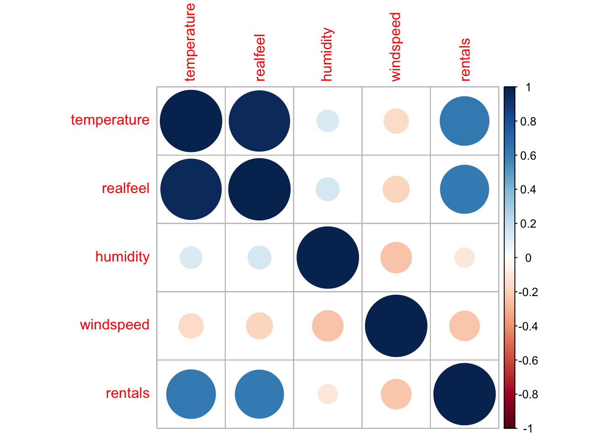

# Clear everything
rm(list = ls())
# Load libraries
library(tidyverse)
library(ggthemes)
library(GGally)
library(dummy)
library(corrplot)
library(lubridate)
library(glmnet)Problem Set 2
Before getting started, we’ll need to make sure the necessary packages installed and libraries loaded. Look instaat the list below and install if necessary before loading them.
Step 1
In this step we are seeking some understanding of the data we have obtained. Remember this is different from understanding the data we NEED to obtain to best answer a business question. We need to understand both and the differences between the two. But, because we have this bikes_ps.csv data set, we will take a dive into that. We first just get an idea for the dimensions and contents.
# Read in the data set and use glimpse to get an idea.
bikes = read_csv("bikes_ps.csv")
glimpse(bikes)Rows: 731
Columns: 10
$ date <date> 2011-01-01, 2011-01-02, 2011-01-03, 2011-01-04, 2011-01-0…
$ season <dbl> 1, 1, 1, 1, 1, 1, 1, 1, 1, 1, 1, 1, 1, 1, 1, 1, 1, 1, 1, 1…
$ holiday <dbl> 0, 0, 0, 0, 0, 0, 0, 0, 0, 0, 0, 0, 0, 0, 0, 0, 1, 0, 0, 0…
$ weekday <dbl> 6, 0, 1, 2, 3, 4, 5, 6, 0, 1, 2, 3, 4, 5, 6, 0, 1, 2, 3, 4…
$ weather <dbl> 2, 2, 1, 1, 1, 1, 2, 2, 1, 1, 2, 1, 1, 1, 2, 1, 2, 2, 2, 2…
$ temperature <dbl> 46.71653, 48.35024, 34.21239, 34.52000, 36.80056, 34.88784…
$ realfeel <dbl> 46.39865, 45.22419, 25.70131, 28.40009, 30.43728, NA, 28.0…
$ humidity <dbl> 0.805833, 0.696087, 0.437273, 0.590435, 0.436957, 0.518261…
$ windspeed <dbl> 6.679665, 10.347140, 10.337565, 6.673420, 7.780994, 3.7287…
$ rentals <dbl> 985, 801, 1349, 1562, 1600, 1606, 1510, 959, 822, 1321, 12…The outcome of glimpse() tells us immediately that our data set contains
731 observations with 10 columns (or features).
Data types are initially all numeric
<dbl>except for adatewhich is a<date>data type.
Now these are the default choices made by the structure of the data set along with the processing intelligence of the read_csv() import function. But our human understanding of the data and its use in solving a business problem are crucial to understanding what the datatype should be and whether changes will need to be made.
Step 2
Looking at the data we see that the numeric data types are not truly appropriate for some of the variables. Lets start with some obvious ones like season and holiday. First we need to remember that all variables/features are encoded information. And we need to discern what the original information to be encoded was and how the encoding scheme we see relates to it. For season we can be confident it was meant to indicate the general season in which a rental took place, such as winter, spring, summer, and fall. Instead of using text, these seasons were encoded, or represented by, a number. Now any numbers could be chosen, but typically the numbers might start at the beginning of a year and progress from there, in other words maybe winter = 1, spring = 2, etc. However, we cannot be truly certain without checking. First the best idea is to look at a codebook if one is provided. A codebook is a description of encoding schemes given by the person or persons who actually did the encoding. An alternative method in this case would be to look at the data column along with the season to see whether 1 corresponds to winter months etc. For brevity, we won’t do this for all features, but we’ll take a look at what it means to sleuth out these problems.
# Create a new feature representing the month of year
# i.e., jan = 1, feb = 2, ..., dec = 12.
# Then we'll create a table showing season by month
bikes %>%
mutate(month = month(date)) %>%
group_by(month) %>%
select(season, month) %>%
table() month
season 1 2 3 4 5 6 7 8 9 10 11 12
1 62 57 40 0 0 0 0 0 0 0 0 22
2 0 0 22 60 62 40 0 0 0 0 0 0
3 0 0 0 0 0 20 62 62 44 0 0 0
4 0 0 0 0 0 0 0 0 16 62 60 40From the above table it becomes clear that the season variable not easily dividable into months. For example season 1 does correspond to wintery months such as December, January, Februrary, and March. But March also has some season 2. Similarly, December has a lot more observations in season 4 (maybe Fall?) than season 1 - Winter. This may suggest that the variable indicates the first official day of winter on December 21 and the first official day of spring on March 21, etc.
However it is encoded, the season feature is not truly numeric. Instead a number on a football jersey, the value is nominal and meant to be an identifier - identifying to which season a day belongs. This is called nominal or categorical data. In R, this is most commonly coded as the factor datatype.
Other features also use numbers this way and should be represented as factors instead: holiday, weekday, and weather. We can now convert these to factors, and even specify new labels if we’d like.
bikes = bikes %>%
mutate_at(vars(season, holiday, weekday, weather), factor) %>%
mutate(season = fct_recode(season, "Winter"="1",
"Spring"="2",
"Summer"="3",
"Fall"="4"))Other Factor Feature Explanations
holiday: This is a binary indicator. A “1” indicates the data is considered a holiday and a 0 that it isn’t. This is categorical and so it needed to be converted to two groups.
weekday: Here each number represents a day of the week like Sunday, Monday, etc. This means the numbers don’t act as numbers - but instead indicate the day of the week a rental occurs. So we convert it to the categorical
factordata type. We could easily change the labels to reflect the day of the week.weather: This appears to take on values 1, 2, and 3. But what does it mean? Without a codebook this one is a problem. We cannot be sure whether this is in fact categorical or numerical, and we wouldn’t know that the categories are. Likely, it refers to weather severity or precipitation. For example, perhaps 1 is clear skies no precipitation, 2 is cloudy/rainy, and 3 is stormy. But we would need to reach out to the data creator to be sure.
Step 3
Now that we’ve got everything properly recognized as numeric or factor, we can use summary() to look at some basic statistics and also scout out missing values. Do make things easier to read, we’ll divide summaries by numeric and factor data types.
bikes %>%
select(-date) %>%
keep(is.numeric) %>%
summary() temperature realfeel humidity windspeed
Min. :22.60 Min. : 12.59 Min. :0.0000 Min. : 0.9322
1st Qu.:46.12 1st Qu.: 43.38 1st Qu.:0.5200 1st Qu.: 5.6182
Median :59.76 Median : 61.25 Median :0.6267 Median : 7.5343
Mean :59.51 Mean : 59.60 Mean :0.6279 Mean : 7.9303
3rd Qu.:73.05 3rd Qu.: 75.43 3rd Qu.:0.7302 3rd Qu.: 9.7092
Max. :90.50 Max. :103.10 Max. :0.9725 Max. :21.1266
NA's :27
rentals
Min. : 22
1st Qu.:3152
Median :4548
Mean :4504
3rd Qu.:5956
Max. :8714
bikes %>%
select(-date) %>%
keep(is.factor) %>%
summary() season holiday weekday weather
Winter:181 0:710 0:105 1:463
Spring:184 1: 21 1:105 2:247
Summer:188 2:104 3: 21
Fall :178 3:104
4:104
5:104
6:105 We see that we have no missing values for factor variables, and are only missing values for the realfeel variable in the set of numeric variables. We are missing 27 values. We could throw these out, but one problem with that is what if they are not missing by random? In other words, what if there are certain days, say when rentals are really high or low that causes this number not to be recorded? Also, although 27 observations are missing realfeel, they are not missing other values. By discarding them, we also throw out all the other information those observations contain. An alternative is to impute the missing values. This means we fill in numbers in the blank spots. But what numbers? We’re essentially making up data by trying to guess what was supposed to be recorded there. If we’re going to do this, we should first try to do no harm. Essentially, we should hope that the statistical properties of the data are not altered or biased by our choice of value. There are number of ways to do this, but for this assignment you’re asked to do the median value imputation. For illustration purposes I’m going to create a copy to compare (you don’t need to do this).
bikes = bikes %>%
mutate(realfeel_orig = realfeel)Now, lets impute the missing values and compare.
bikes = bikes %>%
mutate(realfeel = ifelse(is.na(realfeel),
median(realfeel, na.rm = TRUE),
realfeel))The above code uses ifelse logic to replace values. It asks a question (checks a condition) and then does different actions based on the answer.
Is realfeel missing? (is.na(realfeel)):
YES (TRUE): replace with
median(reelfeel, na.rm = TRUE).NO (FALSE): replace with
realfeel(which leaves it unchanged, since we’re just replacing it with itself).
Now we can compare the resulting distributions.
bikes %>%
select(realfeel, realfeel_orig) %>%
summary() realfeel realfeel_orig
Min. : 12.59 Min. : 12.59
1st Qu.: 43.80 1st Qu.: 43.38
Median : 61.25 Median : 61.25
Mean : 59.66 Mean : 59.60
3rd Qu.: 74.98 3rd Qu.: 75.43
Max. :103.10 Max. :103.10
NA's :27 Looking at the above distributions, we see that realfeel doesn’t have any missing values and is the same median and basically the same mean. Extreme points are not changed, although the 1st and 3rd quartiles changed a smidgen.
# Remove the copy of original realfeel
bikes = bikes %>% select(-realfeel_orig)Step 4
Now we need to gain some understanding of what we’re trying to predict, rentals. This involves understanding what the variable is and its distribution. Rentals appears to encode the total numbers of bike rentals that occurred on a given date. This is count data. We can use both descriptive statistics as well as a histogram to get a picture. Additionally, we can look at a picture of rentals over time to see if there is some trending.
bikes %>% select(rentals) %>% summary() rentals
Min. : 22
1st Qu.:3152
Median :4548
Mean :4504
3rd Qu.:5956
Max. :8714 The lowest recorded number is 22 rentals, and the max a whopping 8,714 rentals! Across the data the mean is roughly 4500 rentals and the median is only a little higher suggesting that there shouldn’t be an extreme skew and it’s fairly symmetric.
bikes %>%
ggplot(aes(x=rentals)) +
geom_histogram(aes(y=after_stat(density)),
fill = "aquamarine",
color = "aquamarine3",
alpha = 0.7) +
geom_density(color = "black") +
labs(title = "Distribution of Daily Bike Rentals",
x = "Rentals (count)") +
theme_clean()Fortunately, we don’t seem to have a huge number of outliers and the distribution is not highly skewed. This means that we might not need to make a log-transformation of this feature to make it more normal. However, one thing to note is that it is a tri-model looking distribution. There are peaks in the data which suggest that there might be three different over-lapping normal distributions. A low, middle, and high one.
Step 5
Many of the supervised learning algorithms can be helped or hurt by the relationships between features that will be used as predictors. We need to understand the distributions of each variable, looking for skew, outliers, and any other weirdness. This could involve histograms or boxplots of the variables. We can use scatter plots to look at relationships between predictors. For easier comparison we can also use correlation matrices to show statistically linear relationships.
bikes %>%
keep(is.numeric) %>%
ggpairs()First off we can see that temperature and realfeel have an almost perfectly linear relationship. The correlation is 0.96! This is a suspiciously strong relationship. In fact, this usually means that one variable is a function of the other. Indeed, realfeel is a relationship between temperature and humidity and wind that is mean to incorporate what temperature it feels like to a human. In such a case, we will want to leave out a variable. Either realfeel or the other features that go into it.
The distribution plots do not look particularly alarming. And the scatterplots don’t show any other overwhelmingly strong relationships. What we can see, is that there is a positive and nonlinear relationship between temperature and rentals. Warmer temps are associated with more rentals (not surprising). But eventually, warmer temperatures result in weather that is too hot for comfort - leading to decreased rentals.
We can also check these correlations with corrplot.
bikes %>%
keep(is.numeric) %>%
cor() %>%
corrplot()
Sometimes we need to convert features to achieve different objectives.
- We might transform a feature to make it easier for our learning algorithm to use, or
- we might transform a feature to put it on the same or similar scale with the the other features.
We’re going to Z-score normalize the temperature feature. Our reason is mostly arbitrary, but one benefit is that after the transformation the mean will be zero. Positive numbers will represent above average temperatures and negative below average ones.
bikes = bikes %>%
mutate(temperature = (temperature - mean(temperature))/sd(temperature))
bikes %>%
select(temperature) %>%
summary() temperature
Min. :-2.38324
1st Qu.:-0.86479
Median : 0.01611
Mean : 0.00000
3rd Qu.: 0.87425
Max. : 2.00098 We can min-max normalize the wind variable. This will take all values of the feature and cram it into the interval \([0, 1]\). It essentially puts a feature into a percent range.
bikes = bikes %>%
mutate(windspeed = (windspeed - min(windspeed))/(max(windspeed)-min(windspeed)))A very important step, and a very common one required by many learning algorithms, is converting all categorical variables into dummy variables. This can be done many different ways in R. The dummy package does make it easier, however.
# Convert every factor type feature into
# a collection dummy variables.
bikes_dummies = dummy(bikes, int = TRUE)Before running the dummy() function we had 10 variables in the dataset. The result of the function is a new dataset with only the dummy variables generated from the factor variables in bikes. At this point we can replace the factor variables with the dummy ones.
bikes_num = bikes %>% keep(is.numeric)
bikes = bind_cols(bikes_num, bikes_dummies)Step 6
We’re going to perform a penalized form of regression known as LASSO to find a decent predictive model. We’ll need to do a few things first. We need to get rid variables we don’t intend to have as predictors. The date and realfeel features will be removed.
bikes = bikes %>%
select(-realfeel) %>%
mutate(temperature2 = temperature^2)Normally, for a linear regression, you’d need to remove one dummy variable from a categorical variable. For example, season has 4 values (Winter, Spring, Fall, and Summer). We have dummy variable for each, but we need to omit one in order for it to work. But with LASSO, its okay and actually better to include them all and let the algorithm decide which to eliminate.
# Separate predictors from target feature.
rentals = bikes$rentals
predictors = as.matrix(select(bikes, -rentals))
# estimate model
cv.model = glmnet(x=predictors, y=rentals)
plot(cv.model)betamin = coef(cv.model, select = "min")
betamin21 x 67 sparse Matrix of class "dgCMatrix" [[ suppressing 67 column names 's0', 's1', 's2' ... ]]
(Intercept) 4504.349 4504.3488 4504.3488 4504.3488 4521.88080 4548.2129
temperature . 107.9895 206.3856 296.0404 358.81318 404.7958
humidity . . . . . .
windspeed . . . . . .
season_Winter . . . . -70.80586 -177.1526
season_Spring . . . . . .
season_Summer . . . . . .
season_Fall . . . . . .
holiday_0 . . . . . .
holiday_1 . . . . . .
weekday_0 . . . . . .
weekday_1 . . . . . .
weekday_2 . . . . . .
weekday_3 . . . . . .
weekday_4 . . . . . .
weekday_5 . . . . . .
weekday_6 . . . . . .
weather_1 . . . . . .
weather_2 . . . . . .
weather_3 . . . . . .
temperature2 . . . . . .
(Intercept) 4572.2185 4594.0915 4614.0214 4632.1808 4648.7269 4663.7733
temperature 446.6574 484.8001 519.5543 551.2210 580.0746 606.4490
humidity . . . . . .
windspeed . . . . . .
season_Winter -274.1034 -362.4415 -442.9318 -516.2716 -583.0961 -643.8634
season_Spring . . . . . .
season_Summer . . . . . .
season_Fall . . . . . .
holiday_0 . . . . . .
holiday_1 . . . . . .
weekday_0 . . . . . .
weekday_1 . . . . . .
weekday_2 . . . . . .
weekday_3 . . . . . .
weekday_4 . . . . . .
weekday_5 . . . . . .
weekday_6 . . . . . .
weather_1 . . . . . .
weather_2 . . . . . .
weather_3 . . . . . .
temperature2 . . . . . .
(Intercept) 4697.44600 4708.17965 4717.9350 4726.8227 4764.29020 5040.6364
temperature 629.51618 650.08703 668.9720 686.1845 702.88110 721.6343
humidity . . . . -39.15179 -314.1194
windspeed . . . . . -187.9222
season_Winter -686.00341 -712.93940 -737.2613 -759.4140 -780.12822 -791.4920
season_Spring . . . . . .
season_Summer . . . . . .
season_Fall . . . . . .
holiday_0 . . . . . .
holiday_1 . . . . . .
weekday_0 . . . . . .
weekday_1 . . . . . .
weekday_2 . . . . . .
weekday_3 . . . . . .
weekday_4 . . . . . .
weekday_5 . . . . . .
weekday_6 . . . . . .
weather_1 13.46167 77.67508 136.1655 189.4594 231.67048 234.5464
weather_2 . . . . . .
weather_3 -222.13569 -402.24587 -566.3192 -715.8155 -847.24754 -916.0894
temperature2 -25.41823 -65.03382 -101.1495 -134.0575 -164.81488 -200.4677
(Intercept) 5293.1675 5524.1569 5734.6350 5926.4150 6101.1577 6260.3767
temperature 738.6197 754.2869 768.5642 781.5731 793.4264 804.2266
humidity -564.8842 -794.4481 -1003.6292 -1194.2273 -1367.8932 -1526.1311
windspeed -360.7638 -518.6729 -662.5581 -793.6610 -913.1171 -1021.9610
season_Winter -801.9082 -811.0890 -819.4511 -827.0704 -834.0128 -840.3384
season_Spring . . . . . .
season_Summer . . . . . .
season_Fall . . . . . .
holiday_0 . . . . . .
holiday_1 . . . . . .
weekday_0 . . . . . .
weekday_1 . . . . . .
weekday_2 . . . . . .
weekday_3 . . . . . .
weekday_4 . . . . . .
weekday_5 . . . . . .
weekday_6 . . . . . .
weather_1 237.1498 239.3717 241.3946 243.2379 244.9173 246.4476
weather_2 . . . . . .
weather_3 -978.6254 -1035.3772 -1087.0850 -1134.1992 -1177.1278 -1216.2429
temperature2 -232.9670 -262.6378 -289.6734 -314.3071 -336.7525 -357.2039
(Intercept) 6405.4512 6530.70879 6639.97647 6740.36076 6785.74321
temperature 814.0674 830.32369 849.26504 866.84250 881.63864
humidity -1670.3116 -1811.05879 -1943.10608 -2063.21508 -2166.05274
windspeed -1121.1356 -1204.63002 -1276.49759 -1342.06120 -1400.53364
season_Winter -846.1021 -834.79598 -815.19898 -796.54486 -780.77013
season_Spring . . . . .
season_Summer . . . . .
season_Fall . 25.29221 62.05134 96.02331 126.54649
holiday_0 . . . . 43.88952
holiday_1 . . . . .
weekday_0 . . . -10.25220 -36.62388
weekday_1 . . . . .
weekday_2 . . . . .
weekday_3 . . . . .
weekday_4 . . . . .
weekday_5 . . . . .
weekday_6 . . . . .
weather_1 247.8419 247.08246 245.36687 244.20900 245.34127
weather_2 . . . . .
weather_3 -1251.8830 -1286.29841 -1318.84598 -1349.23756 -1380.37298
temperature2 -375.8384 -391.29744 -404.54848 -416.62547 -427.19020
(Intercept) 6814.04949 6841.00036 6865.5661 6887.9497 6911.252447
temperature 895.23373 907.87140 919.3974 929.8998 939.624417
humidity -2258.03833 -2343.39601 -2421.1914 -2492.0765 -2556.581813
windspeed -1453.21904 -1501.52998 -1545.5506 -1585.6606 -1622.122922
season_Winter -765.96768 -752.03851 -739.3261 -727.7422 -716.902890
season_Spring . . . . .
season_Summer . . . . .
season_Fall 154.77181 180.72846 204.3919 225.9537 245.774721
holiday_0 95.53740 142.53158 185.3506 224.3656 257.498101
holiday_1 . . . . .
weekday_0 -61.11532 -83.35576 -103.6190 -122.0821 -139.522062
weekday_1 . . . . -4.289251
weekday_2 . . . . .
weekday_3 . . . . .
weekday_4 . . . . .
weekday_5 . . . . .
weekday_6 . . . . .
weather_1 246.68587 247.66347 248.5495 249.3567 250.058595
weather_2 . . . . .
weather_3 -1409.34527 -1435.48110 -1459.2911 -1480.9858 -1500.974763
temperature2 -436.69858 -445.41168 -453.3515 -460.5860 -467.199956
(Intercept) 6937.43526 6961.648200 6984.792504 7014.170217 7041.671998
temperature 947.78864 956.013771 962.859187 965.196893 967.310065
humidity -2612.24534 -2664.611091 -2712.157752 -2754.936585 -2794.633721
windspeed -1654.88347 -1685.119610 -1712.306286 -1735.673820 -1757.289324
season_Winter -708.29327 -699.020980 -692.098748 -696.197193 -699.882484
season_Spring . . -2.963927 -15.817468 -27.637246
season_Summer . . 1.581272 4.894813 8.007163
season_Fall 262.99277 279.560141 293.003792 296.042536 298.671883
holiday_0 282.25708 304.480291 324.437040 342.165683 358.270114
holiday_1 . . . . .
weekday_0 -156.98564 -171.893294 -184.555156 -196.334460 -207.033226
weekday_1 -17.83076 -29.273224 -38.825354 -47.655815 -55.689577
weekday_2 . . . . .
weekday_3 . . . . .
weekday_4 . . . . .
weekday_5 . . . . .
weekday_6 . 4.522785 12.941634 20.332807 27.077008
weather_1 251.22650 251.865755 252.366251 253.014414 253.557432
weather_2 . . . . .
weather_3 -1520.20647 -1537.515493 -1553.879019 -1570.430268 -1585.397673
temperature2 -473.19331 -478.743036 -484.516821 -491.543534 -498.024831
(Intercept) 7066.75618 7089.61297 7110.43930 7129.41548 7146.70586
temperature 969.22912 970.97629 972.56794 974.01813 975.33948
humidity -2830.82563 -2863.80212 -2893.84884 -2921.22625 -2946.17151
windspeed -1776.99241 -1794.94528 -1811.30325 -1826.20801 -1839.78868
season_Winter -703.24858 -706.31764 -709.11447 -711.66293 -713.98501
season_Spring -38.41213 -48.23049 -57.17675 -65.32828 -72.75565
season_Summer 10.84926 13.43982 15.80043 17.95136 19.91122
season_Fall 301.05788 303.23024 305.20927 307.01242 308.65537
holiday_0 372.94209 386.31052 398.49132 409.59001 419.70272
holiday_1 . . . . .
weekday_0 -216.78098 -225.66288 -233.75577 -241.12972 -247.84858
weekday_1 -63.00955 -69.67929 -75.75653 -81.29389 -86.33933
weekday_2 . . . . .
weekday_3 . . . . .
weekday_4 . . . . .
weekday_5 . . . . .
weekday_6 33.22186 38.82072 43.92216 48.57041 52.80571
weather_1 254.05093 254.50086 254.91090 255.28453 255.62497
weather_2 . . . . .
weather_3 -1599.03350 -1611.45828 -1622.77937 -1633.09474 -1642.49373
temperature2 -503.93328 -509.31714 -514.22275 -518.69258 -522.76532
(Intercept) 7162.46022 7178.12459 7190.4569823 7202.113427 7212.963329
temperature 976.54344 977.57650 978.7413728 979.713433 980.576248
humidity -2968.90070 -2989.71573 -3006.2769633 -3022.390316 -3037.235437
windspeed -1852.16288 -1863.39098 -1872.7998945 -1881.735306 -1889.920122
season_Winter -716.10081 -718.12587 -719.6118120 -721.045317 -722.381807
season_Spring -79.52320 -85.83748 -91.2302976 -96.272190 -100.884933
season_Summer 21.69697 23.37726 24.6931197 26.050257 27.311983
season_Fall 310.15236 311.34307 312.9696474 314.231344 315.350094
holiday_0 428.91704 437.49915 445.3515287 452.501614 459.009084
holiday_1 . . . . .
weekday_0 -253.97057 -260.73225 -267.5730929 -273.111870 -278.259889
weekday_1 -90.93654 -96.33641 -101.8418520 -106.204006 -110.284220
weekday_2 . -5.23981 -11.7646047 -17.088710 -22.042468
weekday_3 . . . . .
weekday_4 . . . . .
weekday_5 . . 0.1956188 1.659667 2.916022
weekday_6 56.66476 58.89808 60.4812916 62.457018 64.191499
weather_1 255.93516 256.19610 256.6691413 257.042121 257.360051
weather_2 . . . . .
weather_3 -1651.05774 -1658.77301 -1666.0935559 -1672.371887 -1678.094871
temperature2 -526.47625 -529.92370 -532.8797061 -535.671283 -538.227162
(Intercept) 7222.865067 7231.8569144 7237.317417 7245.520243 7249.995507
temperature 981.355076 982.0625302 982.753030 983.289625 983.864012
humidity -3050.765226 -3063.0917894 -3072.423999 -3084.960372 -3093.048003
windspeed -1897.379441 -1904.1760333 -1909.756683 -1915.847227 -1920.571255
season_Winter -723.609642 -724.7314494 -725.645116 -726.635850 -727.390478
season_Spring -105.091738 -108.9257651 -112.167851 -115.516662 -118.222850
season_Summer 28.467237 29.5213200 30.360075 31.463520 32.183073
season_Fall 316.360614 317.2789045 318.416930 319.029487 319.958669
holiday_0 464.934772 470.3337421 475.207876 479.501402 483.615392
holiday_1 . . . . .
weekday_0 -282.957181 -287.2377464 -290.355729 -292.401263 -294.611882
weekday_1 -114.007930 -117.4012753 -119.628157 -120.998828 -122.497047
weekday_2 -26.560899 -30.6781985 -33.491428 -35.461405 -37.481126
weekday_3 . 0.1591271 2.580656 5.405735 7.738375
weekday_4 . . . . .
weekday_5 4.055997 5.1207742 7.034253 9.294650 11.189602
weekday_6 65.767949 67.2347983 69.546572 72.176803 74.371081
weather_1 257.650369 257.9175272 258.398382 258.299761 258.658738
weather_2 . . . . .
weather_3 -1683.311789 -1688.0935117 -1692.992024 -1696.930936 -1700.939845
temperature2 -540.557822 -542.6818977 -544.480643 -546.373568 -547.883538
(Intercept) 7255.188682 7260.13013 7264.67185 7268.81702 7272.59499
temperature 984.369652 984.81922 985.22451 985.59223 985.92674
humidity -3101.743143 -3109.94413 -3117.47761 -3124.35611 -3130.62719
windspeed -1925.192553 -1929.47903 -1933.40123 -1936.97880 -1940.23950
season_Winter -728.087205 -728.73336 -729.32727 -729.87041 -730.36601
season_Spring -120.792669 -123.15435 -125.31122 -127.27781 -129.07008
season_Summer 32.971844 33.72039 34.41034 35.04123 35.61676
season_Fall 320.705973 321.35836 321.94468 322.47648 322.96028
holiday_0 487.287383 490.62572 493.66705 496.43848 498.96389
holiday_1 . . . . .
weekday_0 -296.446799 -298.05351 -299.49468 -300.79967 -301.98578
weekday_1 -123.723101 -124.78457 -125.73125 -126.58630 -127.36263
weekday_2 -39.193893 -40.70429 -42.06165 -43.29143 -44.40936
weekday_3 9.998694 12.10689 14.04607 15.81978 17.43842
weekday_4 . . . . .
weekday_5 13.016866 14.72510 16.29827 17.73797 19.05210
weekday_6 76.484325 78.45246 80.26151 81.91566 83.42501
weather_1 258.801261 258.89748 258.97806 259.04990 259.11497
weather_2 . . . . .
weather_3 -1704.426238 -1707.56384 -1710.41441 -1713.00989 -1715.37435
temperature2 -549.341456 -550.68767 -551.91848 -553.04100 -554.06410
(Intercept) 7276.03743 7278.22113 7280.65927 7283.08774 7285.39716
temperature 986.23135 986.53178 986.79323 987.02763 987.23825
humidity -3136.34220 -3140.55716 -3144.88434 -3149.09045 -3153.04971
windspeed -1943.21079 -1945.57695 -1947.93875 -1950.16374 -1952.22421
season_Winter -730.81783 -731.17454 -731.43791 -731.67274 -731.88798
season_Spring -130.70324 -131.98800 -133.21136 -134.34560 -135.38665
season_Summer 36.14136 36.61284 37.11132 37.59462 38.04820
season_Fall 323.40086 324.04023 324.54156 324.97705 325.36438
holiday_0 501.26505 503.41475 505.33650 507.07856 508.66184
holiday_1 . . . . .
weekday_0 -303.06544 -304.26348 -305.24271 -306.08655 -306.82979
weekday_1 -128.06897 -128.89204 -129.54746 -130.10506 -130.59172
weekday_2 -45.42703 -46.49426 -47.40288 -48.19542 -48.89841
weekday_3 18.91419 20.10658 21.27070 22.36613 23.38297
weekday_4 . . . . .
weekday_5 20.25035 21.25390 22.19246 23.07697 23.89908
weekday_6 84.80105 85.91728 87.00609 88.02915 88.97780
weather_1 259.17416 259.36971 259.46947 259.52800 259.56525
weather_2 . . . . .
weather_3 -1717.52863 -1719.59900 -1721.44785 -1723.09639 -1724.58075
temperature2 -554.99639 -555.76280 -556.51173 -557.21213 -557.85800
(Intercept) 7287.54626 7289.52525 7291.33809
temperature 987.42838 987.60062 987.75703
humidity -3156.71772 -3160.08871 -3163.17403
windspeed -1954.11701 -1955.84893 -1957.43043
season_Winter -732.08557 -732.26656 -732.43201
season_Spring -136.33860 -137.20758 -138.00014
season_Summer 38.46780 38.85323 39.20594
season_Fall 325.71278 326.02797 326.31405
holiday_0 510.10276 511.41494 512.61024
holiday_1 . . .
weekday_0 -307.49351 -308.09116 -308.63197
weekday_1 -131.02369 -131.41115 -131.76094
weekday_2 -49.52862 -50.09731 -50.61251
weekday_3 24.31956 25.17837 25.96377
weekday_4 . . .
weekday_5 24.65695 25.35226 25.98836
weekday_6 89.85097 90.65126 91.38295
weather_1 259.59146 259.61165 259.62829
weather_2 . . .
weather_3 -1725.92480 -1727.14543 -1728.25572
temperature2 -558.45004 -558.99116 -559.48502bikes = bikes %>%
mutate(pred = as.numeric(predict(cv.model, predictors, s = c(0.01))))bikes %>%
ggplot(aes(x=rentals, y=pred)) +
geom_point()8 Discuss whether you think the features you have in the data make sense for learning to predict daily bike rentals
Yes I think it makes sense to use the features that we did because, using features like temperature, real feel, humidity, windspeed, and if it’s a holiday, encompass critical elements that directly influence people’s decisions to rent bikes. Weather related variables like temperature, real feel, humidity, and windspeed impact people’s comfort and biking conditions. Holidays may mean different daily routines, affecting rental patterns, while distinguishing between weekdays and weekends accounts for different usage patterns. Together, these features provide a comprehensive foundation for predicting bike rentals by considering both environmental and temporal factors.
9 Discuss what is means in this case to train or “fit” a model to the data you prepared.
In the context of bike rental data, training or “fitting” a model means teaching the machine learning algorithm to recognize patterns and relationships within the dataset. Specifically, the model learns how variations in features like temperature, humidity, and windspeed correspond to changes in daily bike rental. Once trained, the model can use this learned knowledge to make predictions, allowing the rental company to anticipate future rental demand effectively.
10 Discuss which preparations you did were required to make the learning algorithm work, and which were not strictly required, but maybe are a good idea.
Several preparations were required to make the learning algorithm work effectively, including data type conversion for categorical variables, handling missing values, normalization, and creating dummy variables. These steps were necessary to make sure that the algorithm can interpret the data correctly. Additionally, while not required, conducting exploratory data analysis, feature engineering, outlier detection, and visualizations are good practices that were used to gain deeper insights into the data and potentially enhance the model’s performance. These extra steps contribute to a more comprehensive understanding of the dataset and may lead to improved predictive results.